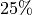
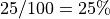
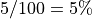
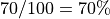
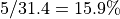
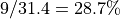
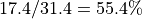

- orphan
alternate_locations¶
- alternate_locations … end_alternate_locations¶
alternate_locations reference <reference-platform-name> location <latitude> <longitude> altitude <length-value> heading <angle-value> weight <real-value> offset_lla <latitude-value> <longitude-value> altitude <length-value> heading <angle-value> offset_ara <angle-value> <length-value> altitude <length-value> heading <angle-value> debug <boolean-value> end_alternate_locations
Overview¶
The alternate_locations command block allows a platform to select a starting position from a set of pre-determined locations.
Warning
Other location-changing mechanisms (e.g. the position command, or a route) may interfere with these commands. If the alternate_location command is used, none of these other mechanisms should be used.
While the alternate locations capability may be used to set the position of an individual platform, it is primarily useful for moving groups of platforms as a single unit. In particular, the offset-form of the command moves a group of platforms such that their position relative to each other is always the same. The offset form is convenient, but if more explicit definition is necessary, the list-form allows such fine-tuning. Additionally, the shared draw capability enables all platforms to use a single global random draw.
Alternate locations includes a debugging system. This system prints the details of chosen locations to the standard output. AFSIM input files may define a global debug flag and a block debug flag for alternate locations. The block flag (if defined) takes precedence and determines the debugging state for a single block without regard to the global flag.
Usage¶
Basic List-Form¶
The alternate_locations block (the most basic list-form) contains a list of locations with a weighting at the end. The location of a platform with such a block is randomly chosen from the list. Each location’s probability of being chosen is: <weight> / <sum-of-weights>. Consider the following input:
platform A WSF_PLATFORM
alternate_locations
location 1n 1e 0 m weight 1
location -1n -1e 0 m weight 1
location 1n -1e 0 m weight 1
location -1n 1e 0 m weight 1
end_alternate_locations
end_platform
platform B WSF_PLATFORM
alternate_locations
location 0n 0e 0 m weight 25
location 0n 0e 0 m weight 5
location 0n 0e 0 m weight 70
end_alternate_locations
end_platform
In platform A, all locations have an equal chance of being chosen (i.e. ), since the weights are all equal. In platform B, the sum of the weights is . Thus, the first location has a  chance of being chosen; the second location a  chance; and the third location a  chance.
Note
It is not necessary that the weights should sum to a particular value. Consider a block with the weights 5, 9, & 17.4. The probability of each location would be , , and , respectively.
Reference Forms: List-Form & Offset-Form¶
The alternate_locations block which specifies a reference platform does not make a random choice, but instead selects a location by referring to the choice of another platform. Such blocks may make selections in one of two ways:
(Offset-Form) The block may contain a single location (using one of the offset_… commands), which is treated as an offset from the location chosen by the referenced platform.
(List-Form) The block may contain a number of location options equal to the number of options on the referenced platform. If the referenced platform selects the first location in its list, the referring platform will choose the first platform in its own list; if the referenced platform selects the second, the referring platform will do likewise; etc.
Note
Since option (2) for a reference form alternate_locations block selects a location based on the index-of-choice of another platform, both platforms must have an equal number of location options.
Consider the following code example:
platform REFERENCE_PLATFORM WSF_PLATFORM
alternate_locations
location 0n 0e 0 m weight 1
location 1n 1e 1 m weight 1
location 2n 2e 2 m weight 1
end_alternate_locations
end_platform
platform A WSF_PLATFORM
alternate_locations
reference REFERENCE_PLATFORM
location 3n 3e altitude 3 m
location 4n 4e altitude 4 m
location 5n 5e altitude 5 m
end_alternate_locations
end_platform
platform B WSF_PLATFORM
alternate_locations
reference REFERENCE_PLATFORM
offset_lla 0.1n 0.2e altitude 0.3 m
end_alternate_locations
end_platform
Platforms A & B both use reference alternate_locations blocks and both refer to platform REFERENCE_PLATFORM. Each will choose its location as follows:
REFERENCE_PLATFORM uses the basic alternate_locations block and randomly chooses a location based on the weights of each.
Platform A uses the reference alternate_locations block and refers to REFERENCE_PLATFORM. The block contains a list of locations equal in length to the list in REFERENCE_PLATFORM (i.e. list-form). Note the absence of weights: weights are unnecessary since A will choose the same index as REFERENCE_PLATFORM. E.g., if the second location is chosen in REFERENCE_PLATFORM (1n 1e 1 m weight 1), the second location will also be chosen in platform A (4n 4e 4 m).
Platform B also uses a reference alternate_locations block that refers to REFERENCE_PLATFORM, but with a single offset_… command (i.e. offset-form. In this case, platform B will add its offset values to REFERENCE_PLATFORM’s position. E.g., if the third location is chosen by REFERENCE_PLATFORM (2n 2e 2 m), the location of platform B will be 2.1n 2.2e 2.3 m.
Commands¶
Global Commands¶
- alternate_locations_global_debug <boolean-value>¶
If set to ‘on’, enables the global alternate locations debug flag. If set to ‘off’, disables the global debug flag for alternate locations. This setting may be overridden by the debug command within individual blocks. Output for each platform is of the following format:
<platform-name> Alternate Locations Pre-Initialization Reference: <base-platform-name>: Draw: <random draw> Location-<location-index>: <latitude> <longitude> Altitude: <altitude> <altitude reference> Heading: <heading> Offset: <latitude-value> <longitude-value> Altitude: <altitude-value> Heading: <heading> Offset: Angle: <angle> Radius: <radius> Altitude: <altitude-value> Heading: <heading> Location-1: Weight: <weight> <latitude> <longitude> Altitude: <altitude> <altitude reference> Heading: <heading> Location-2: Weight: <weight> <latitude> <longitude> Altitude: <altitude> <altitude reference> Heading: <heading> ... Location-<location-index>: <latitude> <longitude> Altitude: <altitude> Heading: <heading>
Default off
- alternate_locations_use_global_draw <boolean-value>¶
If set to ‘on’, directs all alternate locations blocks to use the same draw. Since some blocks may have varying numbers of locations, this is roughly equivalent to choosing a percentile which all blocks will use. If the shared draw is (for example) .32, it will be treated as the 32nd percentile. For a block with three locations, equally-weighted, the first block will be chosen. A block with four, five, or six equally-weighted locations, would choose the second block. Finally, consider a block with unequally-weighted locations, say, [1, 1, 4, 3, 1]. This block would select the third index (spanning from 20.01 to the 60th percentile).
Default off
- alternate_locations_global_draw <real>¶
If set to a value in the range [0…1], will specify the global draw value to be used in place of the single randomized global draw if alternate_locations_use_global_draw is enabled. If set to -1, a random value will be used. In either case, the draw values will be individually weighted by the sum of location weights specified in each block.
Basic Form alternate_locations Block Commands¶
- location <latitude-value> <longitude-value> altitude <length-value> [ agl | msl ] heading <angle-value> weight <real-value>¶
Adds a new location (required: latitude, longitude; optional: altitude, heading, weight) to the list of locations from which this platform may choose. Altitude, heading, and weight may be provided in any order. Dividing the location’s weight by the sum of all weights in the list yields the location’s probability of being chosen.
Note
Altitudes can be followed by msl (mean sea level) or agl (above ground level). msl is the default. agl adds the terrain height to the altitude. See terrain for details about providing a terrain model.
Note
The default weight is ‘0’, but if no weights are specified for all locations in the block, weights will be equally distributed.
- debug <boolean-value>¶
If set to ‘on’, enables debug output for this block. If set to ‘off’, disables debug output for this block. Takes precedence over the global debug flag.
Reference Form alternate_locations Block Commands¶
Note
The location, offset_lla and offset_ara commands are mutually exclusive for the alternate_locations block.
- reference <string>¶
Specifies the reference platform for the alternate_locations block which specifies either the location from which offsets will be applied or the location index which will be used.
- location <latitude-value> <longitude-value> altitude <length-value> [ agl | msl ] heading <angle-value>¶
Adds a new, absolute location (required: latitude, longitude; optional: altitude, heading) to the list of locations from which this platform may choose a start location.
Note
The length of the location-list must equal the length of the location-list on the <reference-platform>.
- offset_lla <latitude-value> <longitude-value> altitude <length-value> [ agl | msl ] heading <angle-value>¶
Specifies a latitude and longitude (altitude and heading optional) from the location chosen by the <reference-platform>. Latitude, longitude, and altitude are offsets with respect to the <reference-platform>; heading sets the current platform’s absolute heading. This command must be the only location specification entry within an alternate_locations block.
- offset_ara <angle-value> <length-value> altitude <length-value> [ agl | msl ] heading <angle-value>¶
Specifies a great-circle angle (0 degrees is due north), radius, and altitude offset from the location chosen by the <reference-platform>. The radius indicates the distance away from the <reference-platform> - at the angle provided - to place the new platform. The altitude indicates any change in altitude from the <reference-platform>’s altitude. Altitude and heading are optional; heading is absolute, not relative. This command must be the only location specification entry within an alternate_locations block.
- debug <boolean-value>¶
If set to ‘on’, enables debug output for this block. If set to ‘off’, disables debug output for this block. Takes precedence over the global debug flag.